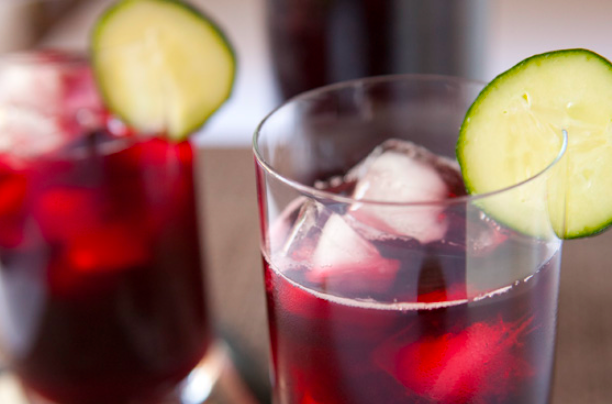

- 1 cup of dried hibiscus flowers
- 2 cups of water
Sugar to taste
- Ice to taste
- 1/2 gallon of water
- Boil the dried flowers in the 2 cups of water for 10 minutes. Let it cool. Strain the flowers from the water.
- Add the 1/2 gallon of water, ice, and sugar. Serv